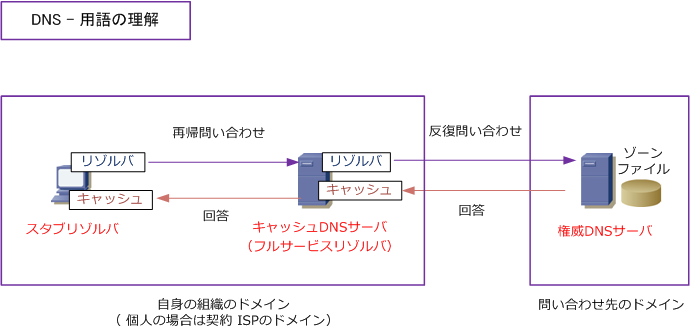
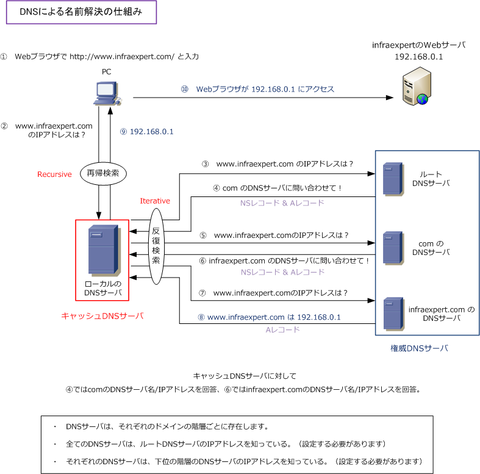
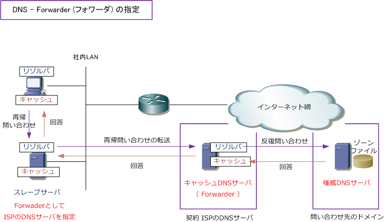
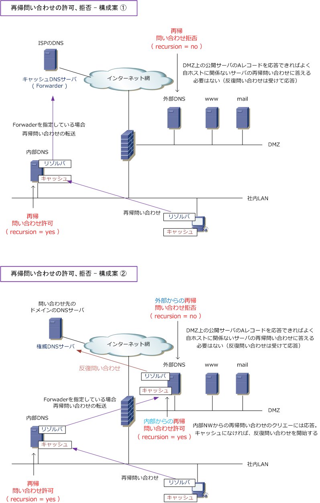

DNS resolver / recursive query iterative query
DNS - 用語理解
重要用語には、「スタブリゾルバとフルサービスリゾルバ」「キャッシュDNSサーバと権威DNSサーバ」 「再帰問い合わせと反復問い合わせ」 の大きく3つがあります。それでは詳細を以降で解説していきます。 ※ キャッシュDNSサーバは「DNSキャッシュサーバ」、権威DNSサーバは「DNSコンテンツサーバ」とも呼ばれています。

DNS - リゾルバとは
リゾルバとは簡単に言うとDNSクライアントのことです。厳密に言うと、ドメイン名からIPアドレスの情報 を検索したり、IPアドレスからドメイン名の情報を検索する名前解決を行うソフトウェアプログラムのこと。 リゾルバには以下の2種類があり、DNSサーバにもPC同様にリゾルバのソフトウェアは組み込まれています。
| リゾルバの種類 | 説明 |
|---|---|
| スタブリゾルバ | DNSリクエストを送信するだけのクライアントPC、またはDNSサーバ。 |
| フルサービスリゾルバ | スタブリゾルバからの再帰問い合わせ（Recursive）を受けて、 反復問い合わせ（Iterative）によって完全にDNS解決を行えるDNSサーバ。 |
※ クライアントPCのDNSのキャッシュ情報は ipconfig /displaydns で確認可能で、ipconfig /flushdns でキャッシュを消せます。
DNS - 2種類のDNSサーバ
DNSサーバにはキャッシュDNSサーバと権威DNSサーバの大きく2種類があります。キャッシュDNSサーバは フルサービスリゾルバとも呼ばれています。ちなみに個人が自宅でインターネット接続する際に指定している ISPから付与されたDNSサーバはキャッシュDNSサーバになります。
| DNSサーバの種類 | 説明 |
|---|---|
| キャッシュDNSサーバ | ドメイン名とIPアドレスの対応の問い合わせを行い、その結果をキャッシュする。 |
| 権威DNSサーバ | ドメイン名とIPアドレスの対応表を「ゾーン」という単位で管理する。 |
※ クライアントPCの設定には優先DNSサーバと 代替DNSサーバの設定があります。文字通り、優先DNSサーバに指定した DNSサーバを優先的に使用し、優先DNSサーバからDNSリプライが返されない際のバックアップとして代替DNSサーバを使用します。
DNS - 再帰問い合わせ、反復問い合わせ
ドメイン名とIPアドレス対応に関する問い合わせは、再帰問い合わせ（Recursive query）と反復問い合わせ （Iterative query）の２種類があります。反復問い合わせは、非再帰問い合わせとも呼ばれています。
| 問い合わせの種類 | 説明 |
|---|---|
| 再帰問い合わせ | リゾルバからの問い合わせ要求を受けたDNSサーバが、他のDNSサーバに問い合わせを行い その最終的な結果をリゾルバに応答する必要のある問い合わせのこと。 |
| 反復問い合わせ | リゾルバから再帰問い合わせを受けたDNSサーバ（キャッシュDNSサーバ）が、再帰問い合わせの 結果を返すために、答えを得られるまで繰り返し他のDNSサーバへ行う問い合わせのことであり、 その反復問い合わせを受けたDNSサーバは、 自身が管理するゾーン情報（またはキャッシュ情報、 または情報がないと）だけを応答するだけでよく、他のDNSサーバに問い合わせをする必要がない。 |
以上の内容を理解できれば、下図の流れも理解できるかと思います。

DNS - フォワーダとは
フォワーダ機能を使用すると、自身のDNSで解決できないDNSリクエストをフォワーダに指定したDNS サーバに転送することができます。結果、フォワーダに指定したDNSサーバがキャッシュDNSサーバとして つまり、フルサービスリゾルバとして動作してくれDNSリクエストに対するDNSリプライを返してくれます。
例えば、個人、SOHO、中小企業などが社内LANとしてDNSサーバを構築したとしても、一般的には性能、 レスポンスなどの点からフォワーダとしてISPのDNSサーバを指定することが推奨です。なお、フォワーダ を指定しない場合、ルートDNSサーバへ問い合わせをすることになりますが、マナー的にもよくありません。

※ クライアントPCはルータをDNSサーバとして指定し、ルータがISPのDNSサーバをフォワーダとして指定する構成もあります。
DNS - 内部DNSサーバと外部DNSサーバ
社内LANにある内部DNSサーバでは、クライアントPCからの再帰問い合わせを受けることになることから、 内部DNSサーバでは再帰問い合わせを許可するのが一般的です。再帰問い合わせが可能な場合、その他の DNSサーバの応答内容をキャッシュとして一時的に保存し、外部DNSサーバへのクエリの回数を減らせます。
一方、DMZの公開セグメントにある外部DNSサーバは、そのDMZセグメントに配置された各種公開サーバの Aレコードを応答する役割として一般的に位置づけられることから、反復問い合わせを受けることはあっても、 再帰問い合わせを受けることはありません。従って、外部DNSサーバでは再帰問い合わせを拒否することが 推奨です。外部DNSサーバで再帰問い合わせを許可（例えば送信元 any）すると、攻撃者が不正な応答内容 を送信してきてキャッシュ内に保存してしまうと、キャッシュがクリアされるまで間違った名前解決が行われ 攻撃者のホストを信頼するホストとみなしてしまう危険性があります。それゆえ再帰問い合わせを拒否します。

※ 内部DNSサーバは一般的にWindowsのDNSサーバで、外部DNSサーバはBINDで構築することが多いです。
← DNSとは